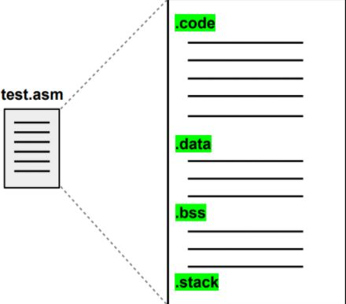

Normally, it is common that when creating a program on the computer, it is described in a high-level language, such as the C language. This program, with the support of a compiler, is translated into a low-level language, such as the Assembly. After that, with the help of an assembler, it is finally described in computer language, in Bytecodes. However, this code is not yet executable and depending on the operating system or if the program needs to make use of some libraries, it will still be necessary to use another tool, Linker. It makes changes to the program, in Bytecode, so that it can use libraries that may be needed depending on the machine's operating system, and another function would be to adjust the program's addressing and finally generate the executable.
(Some compilers do all of these steps)
The simulator also has a graphical interface that allows you to configure the components of the Mandacaru platform, program an application to run on the conceptual processor, configure, run, visualize the simulation and analyze the system performance. The interface is more explored on the Graphical Interface tab.
The structure of the Assembly code follows the following divisions: